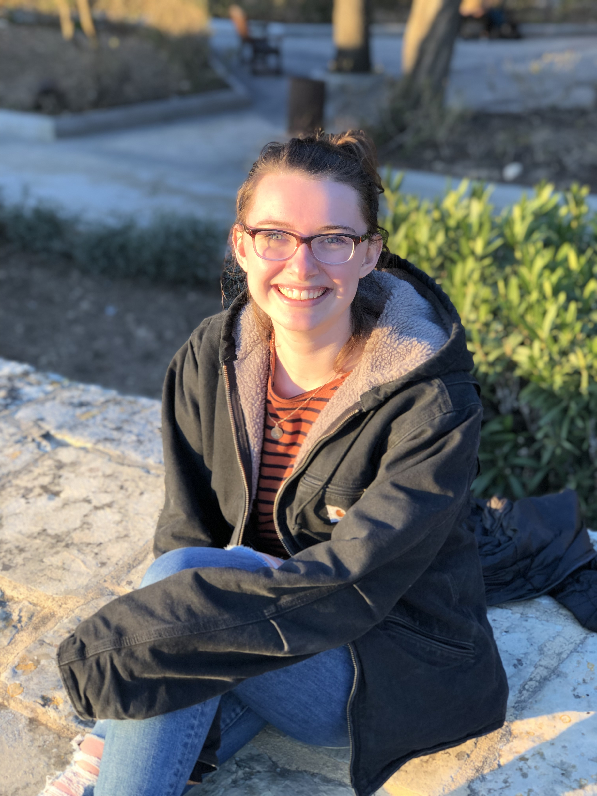

I was born in Seattle, WA in 1997, but moved to Concord, MA before my first birthday.
I grew up with my parents, Nick and Amy, my older sister, Chloe, and my younger brother, Pete.
I have also been lucky enough to grow up around animals. I have had two black labs: Charlie and Lulu, a bulldog named Mabel, a mutt named Moses, three cats: Tom, Max, & Millie, chickens, goats, sheep, and horses!
I came to Syracuse University in 2016. I am graduating in May with a degree in public policy. Post graduation, I am moving to Raleigh, NC to get some sun!